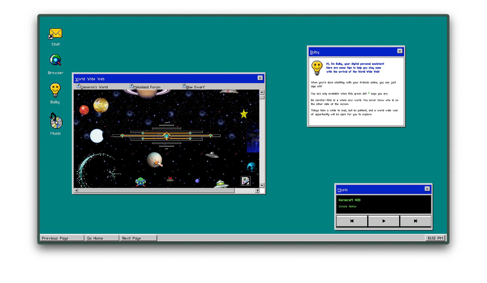
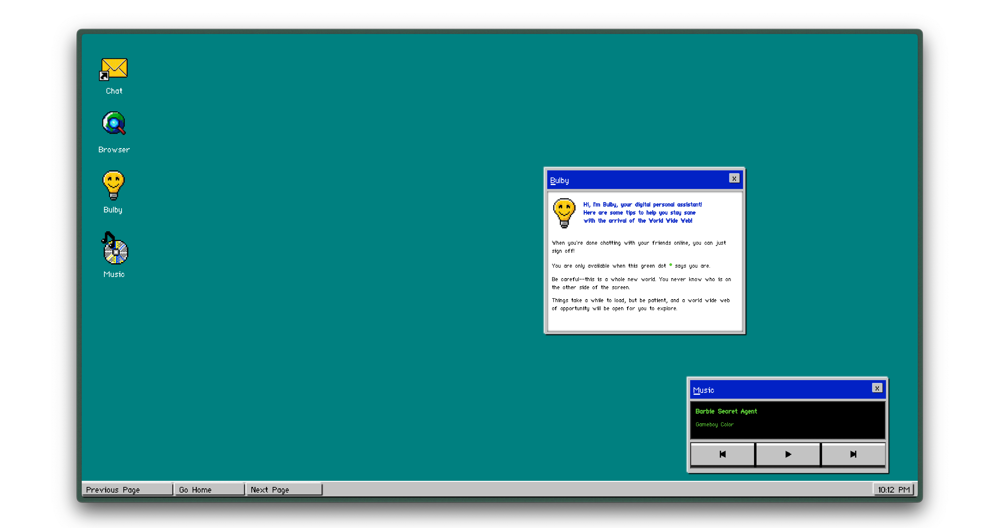
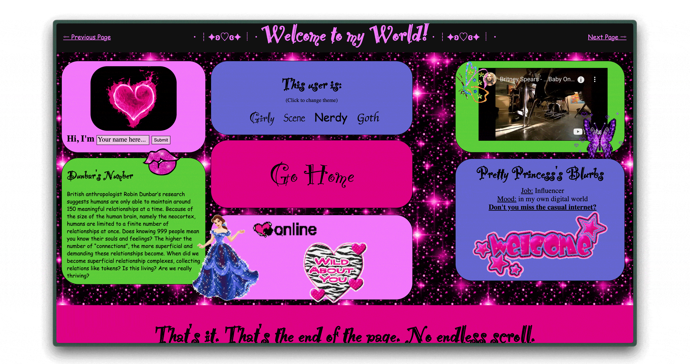
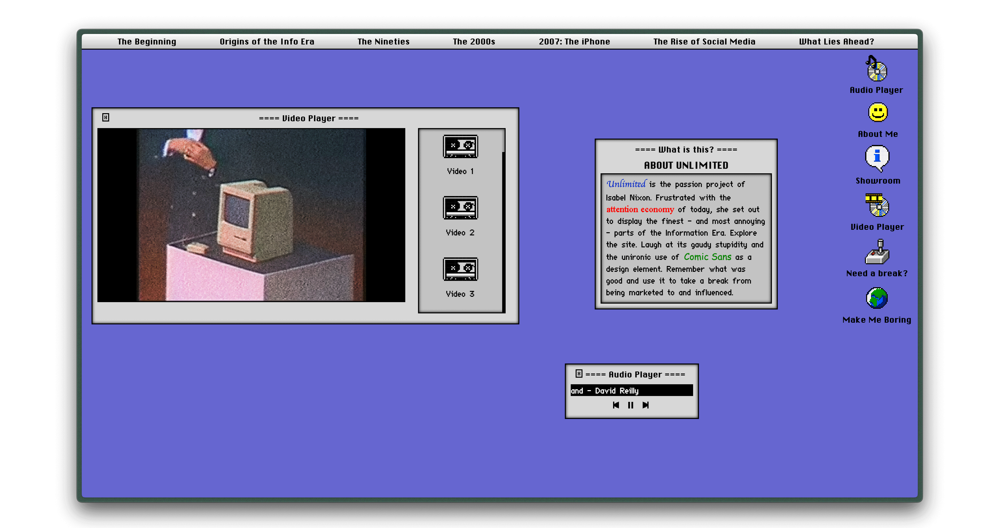
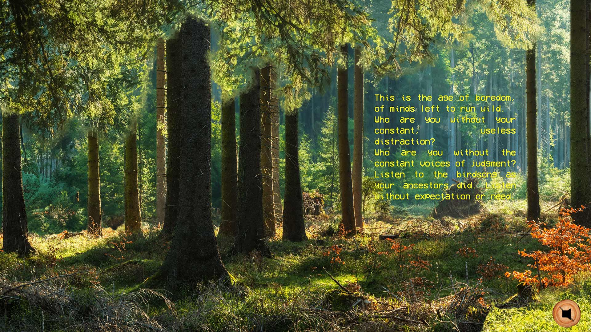
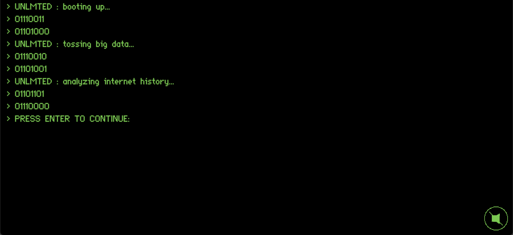
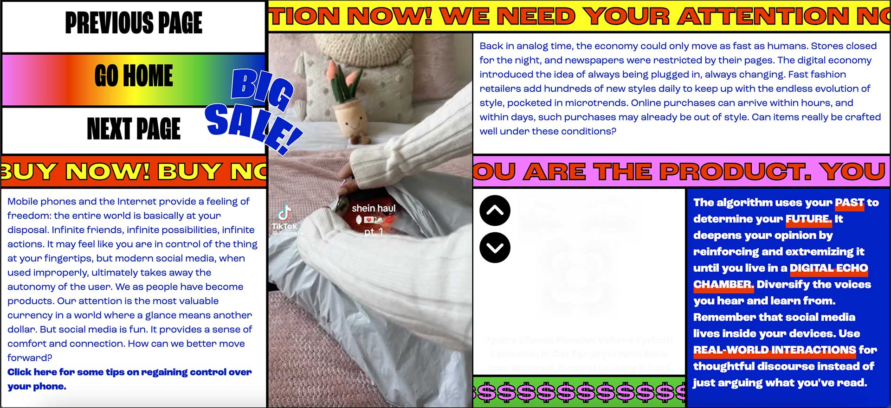

An interactive web experience using technology's past to discern what is right for our future
development
graphics
ux
As part of the Undergraduate Research Apprenticeship Program (URAP) at Ohio State, I had the opportunity to pursue an independent creative project of my choosing. I decided to dive into web development—teaching myself JavaScript and building an experimental, era-inspired site from the ground up.
Unlimited: The Info Era is an interactive website that explores how different eras of technology have shaped the way we think. Each section reflects a specific time period through both content and design, using nostalgic, era-accurate aesthetics to bring the user back into that mindset—even if it means embracing some clunky, chaotic charm.
Visit the site here → unlimitedtheinfoera.com [DESKTOP ONLY]
If you’re visiting on mobile: the site is desktop-only by design, as many interactions rely on hover and drag functions best suited for larger screens.
Topically, I wanted to explore how shifts in technology (hardware, software, access) have influenced thought patterns and creative culture. But the point of this project was also to create a fully custom, non-linear web experience that feels more like a digital art piece than a traditional website. To do this, I had to learn JavaScript, experiment with libraries, and expand beyond basic HTML/CSS.
Each section of the site is built to look and feel like the time it represents—from typography and colors to layout and interactivity. While some design choices may appear “cheesy” or dated, they’re intentionally rooted in the aesthetics of each technological era. This project allowed me to let go of polished modern UI trends and lean into the quirks of legacy design: bold gradients, pixelated icons, janky spacing, and even desktop-style widgets.
To add depth and playfulness, I developed custom widgets and interactive elements throughout the site, including a clickable 90s desktop simulation with drag-and-drop elements and a chatbot that responds to selected topics using pre-scripted responses (meant to reflect early AI logic).
All functionality was built using vanilla JavaScript and open-source libraries I learned along the way. The project was a great exercise in both front-end coding and experience design.





